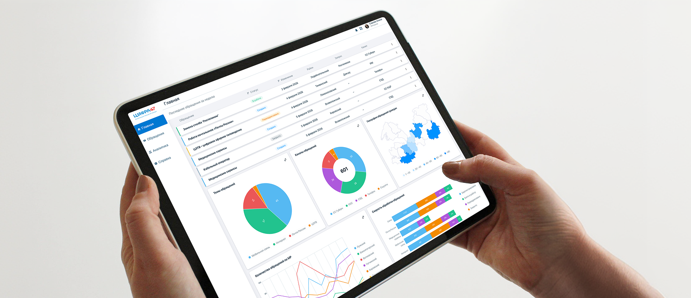
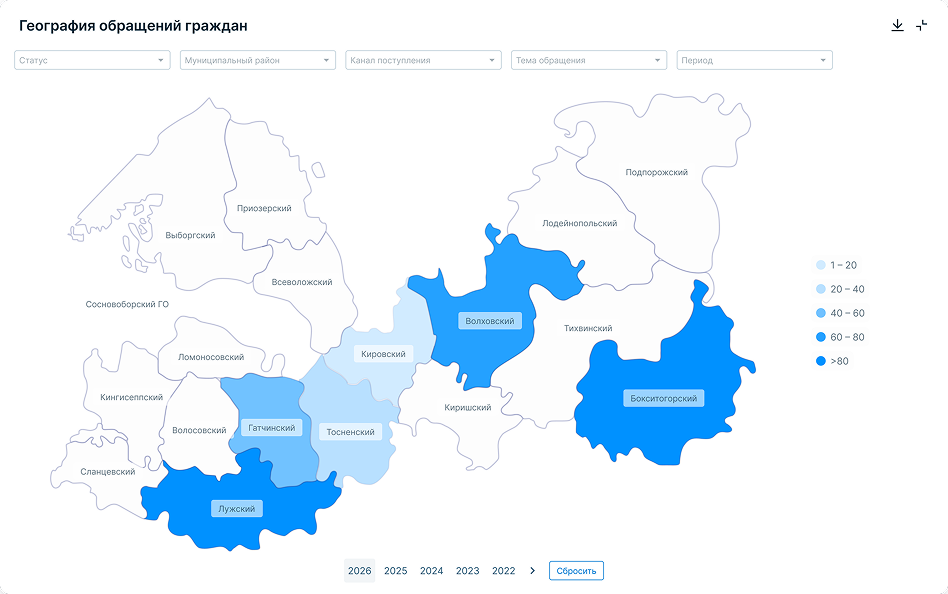
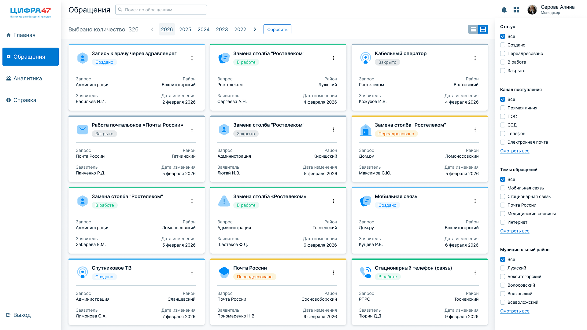
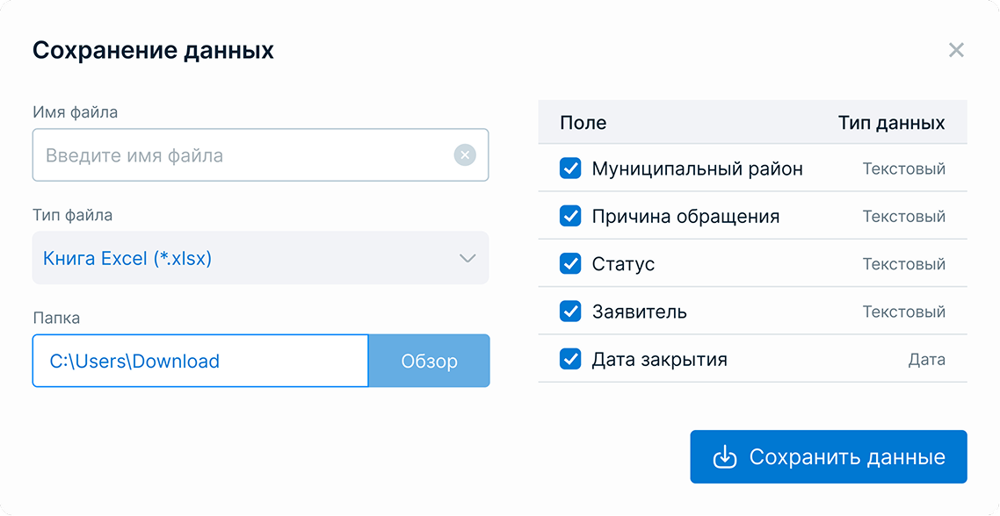
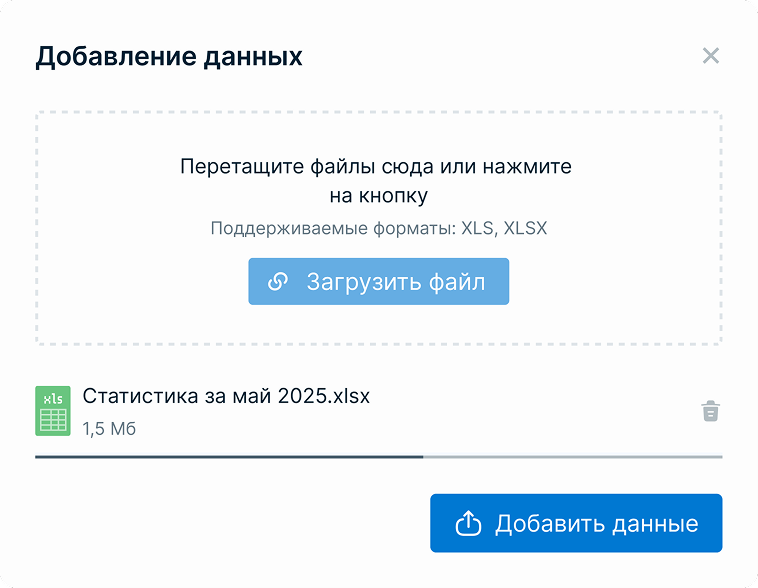
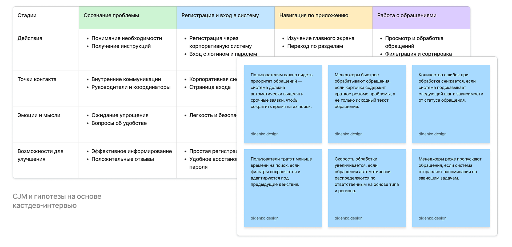
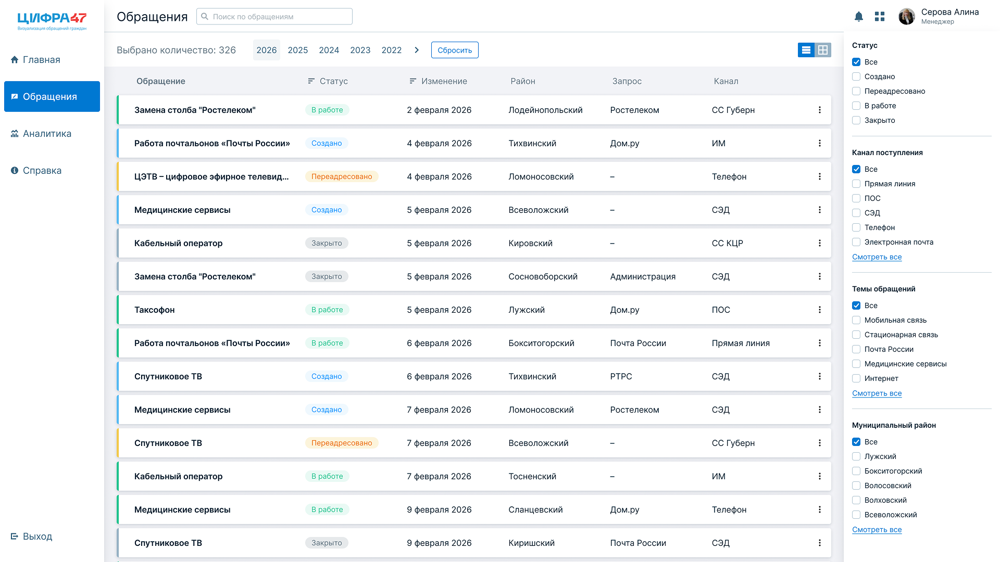
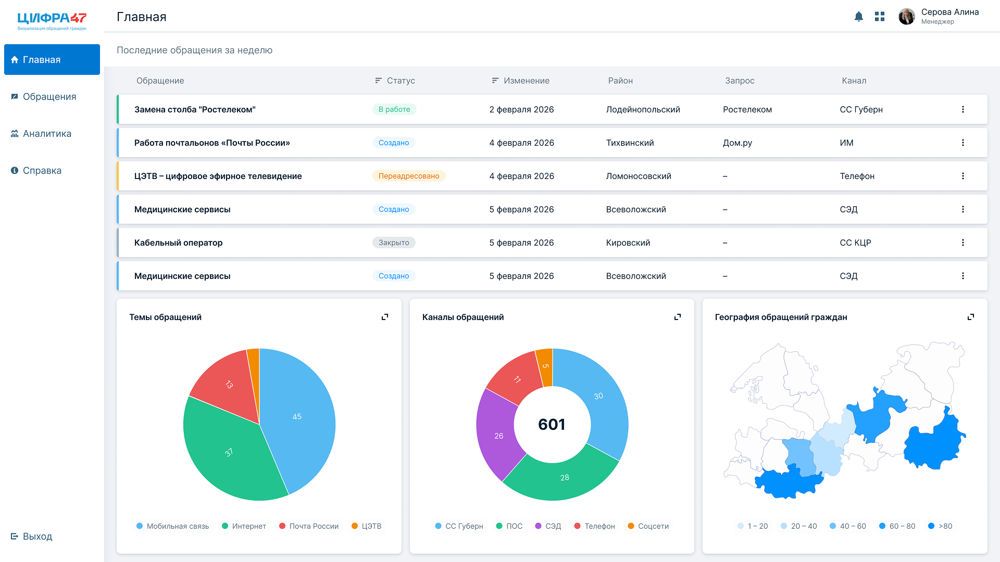

сегмент: B2G / внутренние системы
продукт: система обработки обращений граждан
платформа: Desktop
Разработала систему обработки обращений граждан

Контекст
До запуска системы работа с обращениями строилась вручную. Заявки поступали из разных каналов, фиксировались в Excel и распределялись между менеджерами без единой логики. В процессе накапливалась рутина: обращения терялись или дублировались, контроль сроков требовал постоянного внимания, нагрузка на специалистов постепенно росла.
Задача проекта заключалась в том, чтобы собрать все обращения в одной системе и упростить работу с ними.
Результаты
- время обработки обращений сократилось на 30%
- уменьшилось количество ручных действий в работе специалистов
- процесс стал прозрачным за счёт статусов и единого пространства работы
- количество дублирующихся обращений снизилось примерно на 25%





Моя роль
- логика интерфейса и структура системы
- проработка пользовательских сценариев
- работа с менеджерами и аналитиками
- участие в выборе продуктовых решений
Исследование и подход
На старте была только документация и экспертиза команды.
-
Чтобы разобраться в процессе, я:
- провела интервью с менеджерами
- погрузилась в текущий сценарий обработки обращений
- выделила ключевые шаги и проблемные места
-
Дальше:
- собрала структуру системы
- определила основные сценарии работы
- подготовила несколько концепций интерфейса
Концепции и решения
На этапе проектирования появились два подхода.
-
Комплексная модель
- Единый поток обращений с универсальной логикой обработки.
-
Тематическая модель
- Разделение по категориям с более точечной работой внутри каждой темы.
Чтобы принять решение, провели A/B тестирование на реальных сценариях.
В итоге выбрали тематическую модель. Она быстрее воспринималась, упрощала навигацию и лучше ложилась на реальную работу менеджеров.

Обработка обращений
Основной сценарий — работа со списком обращений. Раньше менеджеры тратили много времени на поиск и ручную сортировку заявок. В системе появился единый список с фильтрами, статусами и быстрым доступом к нужной информации, что сократило время на операции и снизило количество лишних действий.
Карточка обращения
Ранее информация по обращению была разрознена и собиралась вручную. Я спроектировала карточку, где все данные собраны на одном экране, видна история изменений и доступны ключевые действия. Это ускорило обработку и упростило работу специалистов.

Аналитика и контроль
В систему добавили базовую аналитику: распределение обращений по каналам, статусы и текущую нагрузку, а также обзор по темам. Это дало менеджерам и руководителям больше контроля над процессом и помогло быстрее принимать решения.


Результаты
- время обработки обращений сократилось на 30%
- уменьшилось количество ручных действий в работе специалистов
- процесс стал прозрачным за счёт статусов и единого пространства работы
- количество дублирующихся обращений снизилось примерно на 25%
Инсайты проекта
Этот проект показал, насколько важна прозрачность в системах с большим потоком обращений. Когда статусы, сроки и ответственные видны в одном месте, специалисты быстрее ориентируются в работе и увереннее контролируют процесс.
Базовая аналитика стала опорой для управления нагрузкой: команда получила возможность видеть проблемные зоны, отслеживать динамику и принимать решения быстрее.